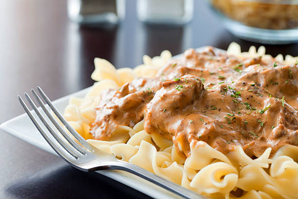

Beef stroganoff
Home

Delicious and dazzling beef stroganoff recipe
Make an elegant and tasty beef stroganoff in just 30 minutes for you and your family!
Ingredients
- 500g/1lbs of beef (this recipe uses rib steak)
- Butter
- Flour
- Egg noodles
- 2 cups of whole cremini mushrooms, sliced
- 3-4 yellow onion, thinly sliced
- 3 gloves of garlic, diced
- 1 cup of white wine
- 2 cups of beef stock
- 2 tbsp of Dijon mustard
- 2 tbsp of Worcestershire
- Few sprigs of fresh thyme
- 3-4 cups of sour cream
- Parsley for garnish
- Salt and pepper
Steps
- Begin by thinly slicing your beef, coat completely with flour
- Add to a pre heated, heavy bottom pan for 2-3 minutes per side until you get some nice color
- Remove beef, add 2 tbsp of butter, when melted add your mushrooms
- After mushrooms are golden (4-5 minutes) add your onions
- Cook until softened, add your garlic and thyme and sauté for an additional minute
- Deglaze with white wine, add your mustard and Worcestershire and cook down for a few minutes. Add in your seared beef and beef stock. Stir together and let simmer for 10-15 minutes
- Once reduced, add In sour cream, then your egg noodles to finish cooking in the sauce then enjoy